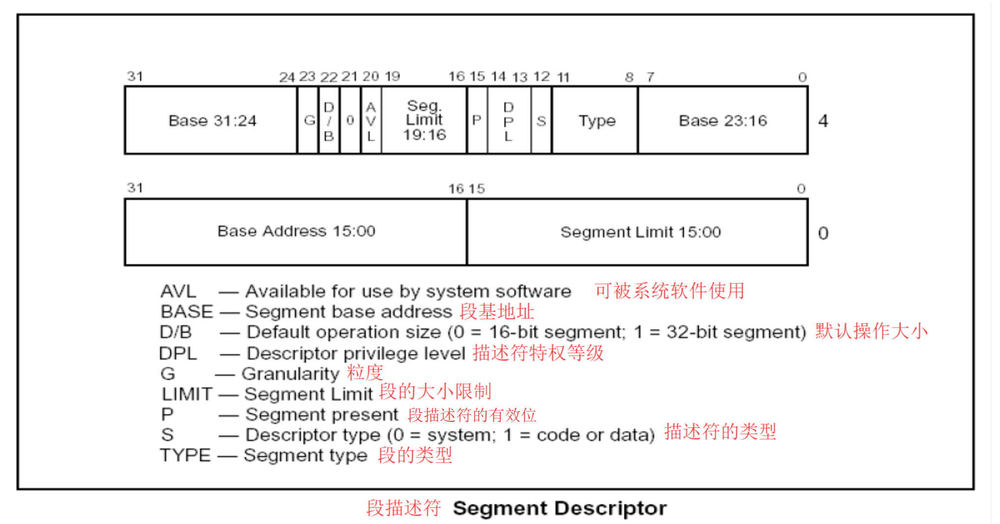
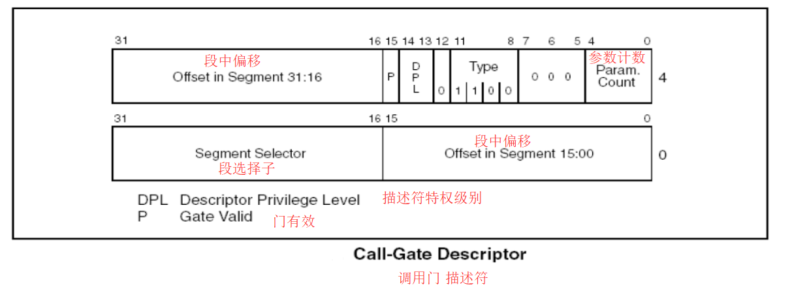
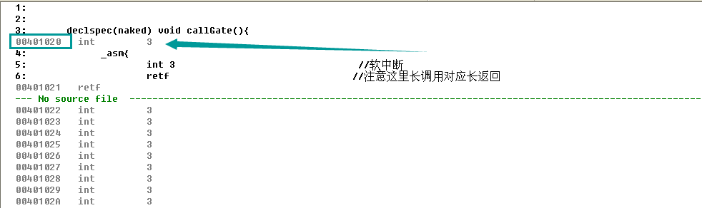
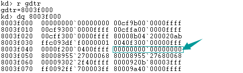

# 前言
在学习长调用时没有用实例具体分析，因为牵扯到了调用门的知识。
# 调用门
# 调用门的作用
调用门可以用来提权，通过提权可以实现访问高地址空间等 RING0（内核）层才能进行的操作
# 调用门和长调用关系
回顾先前的笔记可知：
长调用 CALL FAR CS:EIP 指令要调用的地址是由 CS 段选择子查 GDT 得到的调用门 段描述符得来的，后面的 EIP 不发挥作用
# 调用门执行流程
- 根据 CS 的值 查 GDT，找到对应的段描述符 这个描述符是一个调用门
- 在调用门描述符中存储另一个代码段的选择子
- 选择子指向的段 段.Base + 偏移地址 就是真正要执行的地址
# 调用门描述符
# 对比段描述符

调用门描述符结构

当一个段描述符是一个调用门描述符时，有以下特征：
- S 位为 0，表示该段描述符为系统段描述符（调用门描述符属于系统段描述符）
- Type 域为 1100，表示该段描述符为 32 位调用门
- 低 16 位到 31 位由原本的基地址变为存储一个段选择子，该段选择子才和代码真正要调用的地址相关
- 真正要调用的地址 = 段选择子所指向的段.Base + 32 位的段中偏移 （段中偏移分为两部分：高位 31-16 位和低位 15-0 位）
- 段.Base 默认为 0，故真正要调用的地址 = 32 位的段中偏移
给出段描述符和调用门描述符各部分的对比：
# 段描述符
| 数据位 | 31-24 | 23 | 22 | 21 | 20 | 19-16 | 15 | 14-13 | 12 | 11-8 | 7-0 | |
|---|---|---|---|---|---|---|---|---|---|---|---|---|
| 含义 | Base | G | D/B | 0 | AVL | Seg.Limit | P | DPL | S | Type | Base | |
| 解释 | 基地址 | 粒度 | 默认操作大小 | 固定为 0 | 用于系统软件使用 | 段大小限制 | 有效位 | 特权等级 | 描述符类型 | 段类型 | 基地址 | |
| 数据位 | 31-16 | 15 | 14-13 | 12 | 11-8 | 7-5 | 4-0 | |||||
| ------ | -------- | ------ | -------- | ----- | -------- | ------- | ----------- | |||||
| 含义 | offset | P | DPL | S | Type | 无 | param.count | |||||
| 解释 | 段中偏移 | 有效位 | 特权等级 | 值为 0 | 值为 1100 | 值为 000 | 参数计数 |
# 调用门描述符
| 数据位 | 31-16 | 15-0 |
|---|---|---|
| 含义 | Base Adress | Segment Limit |
| 解释 | 基地址 | 段大小限制 |
| 数据位 | 31-16 | 15-0 |
| 含义 | selector | offset |
| 解释 | 段选择子 | 段中偏移 |
# 构造无参调用门描述符
了解了调用门描述符的结构后，尝试自己构造一个无参的调用门描述符，如下：
| 数据位 | 31-16 | 15 | 14-13 | 12 | 11-8 | 7-5 | 4-0 |
|---|---|---|---|---|---|---|---|
| 含义 | offset | P | DPL | S | Type | 无 | param |
| 解释 | 段中偏移 | 有效位 | 特权等级 | 值为 0 | 值为 1100 | 值为 000 | 参数 |
| 值（二进制） | 0 | 1 | 11 | 0 | 1100 | 000 | 0000 |
| 数据位 | 31-16 | 15-0 | |||||
| :------------- | -------- | -------- | |||||
| 含义 | selector | offset | |||||
| 解释 | 段选择子 | 段中偏移 | |||||
| 值（十六进制） | 0x0008 | 0 |
得到调用门描述符为：0000EC00`00080000
段中偏移暂时不明确要调用的代码段，先置 0
# 示例代码
__declspec(naked) void callGate(){ | |
_asm{ | |
int 3 // 软中断 | |
retf // 注意这里长调用对应长返回 | |
} | |
} | |
int main(){ | |
char buff[6]; | |
//*(DWORD*)&buff [0]= 0x12345678; // 低地址 32 位为 0x12345678，EIP 已废弃，故随便填即可 | |
//*(DWORD*)&buff [4]=0x48; // 高地址 16 位为 0x48，段选择子 | |
// 也可以换作这种写法 | |
_asm{ | |
mov dword ptr ds:[buff],0x12345678 // 低 32 位赋值废弃 EIP | |
lea eax,dword ptr ds:[buff] // 将 buff 地址给 EAX | |
add eax,4 // 地址 + 4，即得到高地址 | |
mov word ptr ds:[eax],0x48 // 高 16 位赋值段选择子 selector | |
} | |
// 使用 调用门 | |
_asm{ | |
call fword ptr ds:[buff] //fword 数据宽度为 6 字节 | |
} | |
return 0; | |
} |
# 代码说明
代码十分简单，主要分为两部分：
- callGate：调用门真正要调用的函数，先软中断，然后长返回
- main：先构造一个 CS:EIP，这里为 0x48:0x12345678，然后使用调用门
当我们发动调用门技能时，程序会跳转到我们构造的调用门描述符中预先设置的地址，并且我们的权限会提升到我们设置的权限！！可以做一些操作系统才能做的事情。
# 实验过程
目前一些重要操作只能手动……
- 确定要跳转的函数的地址

- 构造 Call-Gate 描述符
要跳转的地址为： 0x00401020
Call-Gate Descriptor: 0040ec00`00081020
- 修改 GDT 表

修改 0x8003f048 这个地址，因为这是一个没有被用到的段描述符。
eq 8003f048 0040ec00`00081020
- 在调试机中执行上面的代码
如果没有意外的话，调试机会被中断。
# 构造有参的调用门
在构造调用门描述符时要说明参数个数，关于这个参数个数，需要注意的是，它的值共 5 位（5 个比特位）。
# 代码
#include <stdio.h> | |
#include <windows.h> | |
DWORD x; | |
DWORD y; | |
DWORD z; | |
__declspec(naked) void callGate(){ | |
_asm{ | |
pushad // 将所有 32 位通用寄存器压入堆栈 | |
pushfd // 将 32 位标志寄存器 EFLFAGS 压入堆栈 | |
mov eax,[esp+0x24+0x8+0x8] // 从堆栈中取出第一个参数 | |
mov dword ptr ds:[x],eax // 将取出的参数赋值给全局变量 x | |
mov eax,[esp+0x24+0x8+0x4] // 从堆栈中取出第二个参数 | |
mov dword ptr ds:[y],eax // 将取出的参数赋值给全局变量 y | |
mov eax,[esp+0x24+8+0] // 从堆栈中取出第三个参数 | |
mov dword ptr ds:[z],eax // 将取出的参数赋值给全局变量 z | |
popfd // 将所有 32 位通用寄存器出栈 | |
popad // 将所有 32 位标志寄存器 EFLFAGS 出栈 | |
retf 0xC // 注意这里长调用对应长返回，堆栈平衡 0xC=12=3*4 = 参数个数 * 参数的数据宽度（单位字节） | |
} | |
} | |
int main(){ | |
char buff[6]; | |
*(DWORD*)&buff [0]= 0x12345678; // 低地址 32 位为 0x12345678，EIP 已废弃，故随便填即可 | |
*(DWORD*)&buff [4]=0x48; // 高地址 16 位为 0x48，段选择子 | |
// 也可以换作这种写法 | |
//_asm{ | |
// mov dword ptr ds:[buff],0x12345678 // 低 32 位赋值废弃 EIP | |
// lea eax,dword ptr ds:[buff] // 将 buff 地址给 EAX | |
// add eax,4 // 地址 + 4，即得到高地址 | |
// mov word ptr ds:[eax],0x48 // 高 16 位赋值段选择子 selector | |
//} | |
// 使用 调用门 | |
_asm{ | |
push 1 | |
push 2 | |
push 3 | |
call fword ptr[buff] //fword 数据宽度为 6 字节 | |
} | |
printf("%X\t%X\t%X\n",x,y,z); | |
return 0; | |
} |
# 代码说明
与构造无参调用门描述符相比，主要变化为：
在使用调用门前压入了三个参数：1、2、3
调用代码作用为：①保护现场（压入所有通用寄存器和标志寄存器）；②从堆栈中取出对应的参数；③将取出的参数赋值给对应的全局变量
调用代码最后要平衡堆栈，ret 0xC 0xC=12=3*4 = 参数个数 * 参数的数据宽度（单位字节）
在调用结束后，输出调用后被赋值的全局变量，验证参数是否成功传递
# 实验过程
与无参基本一样。描述符中记加参数个数。
注意观察堆栈变化。
# 总结
当通过门，权限不变的时候，只会 PUSH 两个值：①CS（新的 CS 的值由调用门决定） ；②返回地址
当通过门，权限改变的时候，会 PUSH 四个值：①SS；② ESP；③ CS ；④ 返回地址 （新的 CS 的值由调用门决定 新的 SS 和 ESP 由 TSS 提供）
通过门调用时，要执行代码的地址由调用门中的选择子决定；使用 RETF 返回时，由堆栈中压入的返回地址决定
# Reference
详细参见：https://www.52pojie.cn/thread-1454353-1-1.html